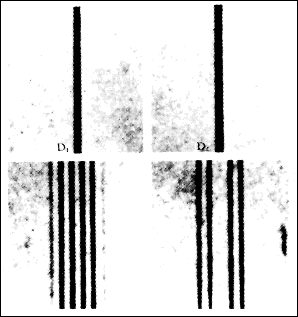
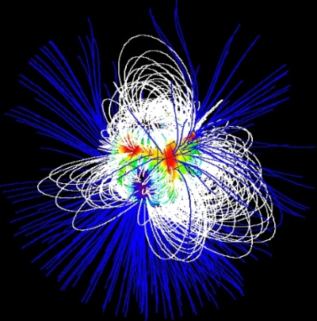

A stellar magnetic field is a magnetic field generated by the motion of conductive plasma inside a star. This motion is created through convection, which is a form of energy transport involving the physical movement of material. A localized magnetic field exerts a force on the plasma, effectively increasing the pressure without a comparable gain in density. As a result, the magnetized region rises relative to the remainder of the plasma, until it reaches the star's photosphere. This creates starspots on the surface, and the related phenomenon of coronal loops.
Measurement
The magnetic field of a star can be measured by means of the Zeeman effect. Normally the atoms in a star's atmosphere will absorb certain frequencies of energy in the electromagnetic spectrum, producing characteristic dark absorption lines in the spectrum. When the atoms are within a magnetic field, however, these lines become split into multiple, closely spaced lines. The energy also becomes polarized with an orientation that depends on orientation of the magnetic field. Thus the strength and direction of the star's magnetic field can be determined by examination of the Zeeman effect lines.
A stellar spectropolarimeter is used to measure the magnetic field of a star. This instrument consists of a spectrograph combined with a polarimeter. The first instrument to be dedicated to the study of stellar magnetic fields was NARVAL, which was mounted on the Bernard Lyot Telescope at the Pic du Midi de Bigorre in the French Pyrenees mountains.
Field generation
Stellar magnetic fields, according to solar dynamo theory, are caused within the convective zone of the star. The convective circulation of the conducting plasma functions like a dynamo. This activity destroys the star's primordial magnetic field, then generates a dipolar magnetic field. As the star undergoes differential rotation–rotating at different rates for various latitudes–the magnetism is wound into a toroidal field of "flux ropes" that become wrapped around the star. The fields can become highly concentrated, producing activity when they emerge on the surface.
The magnetic field of a rotating body of conductive gas or liquid develops self-amplifying electric currents, and thus a self-generated magnetic field, due to a combination of differential rotation (different angular velocity of different parts of body), Coriolis forces and induction. The distribution of currents can be quite complicated, with numerous open and closed loops, and thus the magnetic field of these currents in their immediate vicinity is also quite twisted. At large distances, however, the magnetic fields of currents flowing in opposite directions cancel out and only a net dipole field survives, slowly diminishing with distance. Because the major currents flow in the direction of conductive mass motion (equatorial currents), the major component of the generated magnetic field is the dipole field of the equatorial current loop, thus producing magnetic poles near the geographic poles of a rotating body. The magnetic fields of all celestial bodies are often aligned with the direction of rotation, with notable exceptions such as certain pulsars.
Periodic field reversal
Another feature of this dynamo model is that the currents are AC rather than DC. Their direction, and thus the direction of the magnetic field they generate, alternates more or less periodically, changing amplitude and reversing direction, although still more or less aligned with the axis of rotation.
The Sun's major component of magnetic field reverses direction every 11 years (so the period is about 22 years), resulting in a diminished magnitude of magnetic field near reversal time. During this dormancy, the sunspots activity is at maximum (because of the lack of magnetic braking on plasma) and, as a result, massive ejection of high energy plasma into the solar corona and interplanetary space takes place. Collisions of neighboring sunspots with oppositely directed magnetic fields result in the generation of strong electric fields near rapidly disappearing magnetic field regions. This electric field accelerates electrons and protons to high energies (kiloelectronvolts) which results in jets of extremely hot plasma leaving the Sun's surface and heating coronal plasma to high temperatures (millions of kelvin).
If the gas or liquid is very viscous (resulting in turbulent differential motion), the reversal of the magnetic field may not be very periodic. This is the case with the Earth's magnetic field, which is generated by turbulent currents in a viscous outer core.
Surface activity
Starspots are regions of intense magnetic activity on the surface of a star. (On the Sun they are termed sunspots.) These form a visible component of magnetic flux tubes that are formed within a star's convection zone. Due to the differential rotation of the star, the tube becomes curled up and stretched, inhibiting convection and producing zones of lower than normal temperature. Coronal loops often form above starspots, forming from magnetic field lines that stretch out into the corona. These in turn serve to heat the corona to temperatures over a million kelvins.
The magnetic fields linked to starspots and coronal loops are linked to flare activity, and the associated coronal mass ejection. The plasma is heated to tens of millions of kelvins, and the particles are accelerated away from the star's surface at extreme velocities.
Surface activity appears to be related to the age and rotation rate of main-sequence stars. Young stars with a rapid rate of rotation exhibit strong activity. By contrast middle-aged, Sun-like stars with a slow rate of rotation show low levels of activity that varies in cycles. Some older stars display almost no activity, which may mean they have entered a lull that is comparable to the Sun's Maunder minimum. Measurements of the time variation in stellar activity can be useful for determining the differential rotation rates of a star.

Magnetic stars
A T Tauri star is a type of pre–main sequence star that is being heated through gravitational contraction and has not yet begun to burn hydrogen at its core. They are variable stars that are magnetically active. The magnetic field of these stars is thought to interact with its strong stellar wind, transferring angular momentum to the surrounding protoplanetary disk. This allows the star to brake its rotation rate as it collapses.
Small, M-class stars (with 0.1–0.6 solar masses) that exhibit rapid, irregular variability are known as flare stars. These fluctuations are hypothesized to be caused by flares, although the activity is much stronger relative to the size of the star. The flares on this class of stars can extend up to 20% of the circumference, and radiate much of their energy in the blue and ultraviolet portion of the spectrum.
Planetary nebulae are created when a red giant star ejects its outer envelope, forming an expanding shell of gas. However it remains a mystery why these shells are not always spherically symmetrical. 80% of planetary nebulae do not have a spherical shape; instead forming bipolar or elliptical nebulae. One hypothesis for the formation of a non-spherical shape is the effect of the star's magnetic field. Instead of expanding evenly in all directions, the ejected plasma tends to leave by way of the magnetic poles. Observations of the central stars in at least four planetary nebulae have confirmed that they do indeed possess powerful magnetic fields.
After some massive stars have ceased thermonuclear fusion, a portion of their mass collapses into a compact body of neutrons called a neutron star. These bodies retain a significant magnetic field from the original star, but the collapse in size causes the strength of this field to increase dramatically. The rapid rotation of these collapsed neutron stars results in a pulsar, which emits a narrow beam of energy that can periodically point toward an observer.
Compact and fast-rotating astronomical objects (white dwarfs, neutron stars and black holes) have extremely strong magnetic fields. The magnetic field of a newly born fast-spinning neutron star is so strong (up to 108 teslas) that it electromagnetically radiates enough energy to quickly (in a matter of few million years) damp down the star rotation by 100 to 1000 times. Matter falling on a neutron star also has to follow the magnetic field lines, resulting in two hot spots on the surface where it can reach and collide with the star's surface. These spots are literally a few feet (about a metre) across but tremendously bright. Their periodic eclipsing during star rotation is hypothesized to be the source of pulsating radiation (see pulsars).
An extreme form of a magnetized neutron star is the magnetar. These are formed as the result of a core-collapse supernova. The existence of such stars was confirmed in 1998 with the measurement of the star SGR 1806-20. The magnetic field of this star has increased the surface temperature to 18 million K and it releases enormous amounts of energy in gamma ray bursts. Jets of relativistic plasma are often observed along the direction of the magnetic poles of active black holes in the centers of very young galaxies.